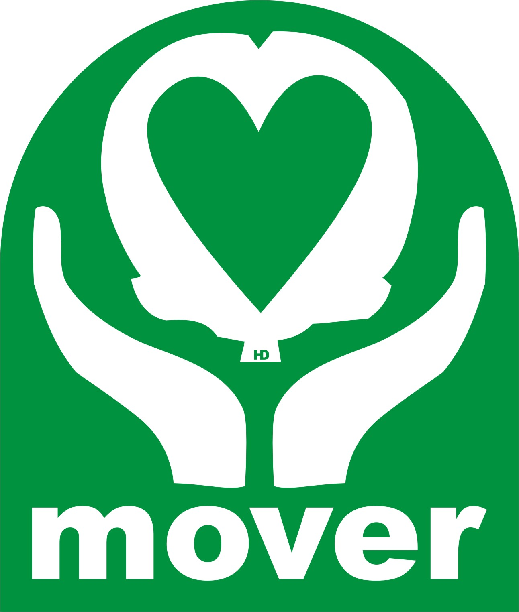

|

Actualizado. |
Movimiento Republicano Esperanza Sistema base |
|
|
Sistema base La República
Se considera al sistema La República como el sistema base, por ser éste el heredado de los fundadores de la patria venezolana, quienes la instauran en diciembre de 1811, con la creación de la constitución de ese año, y con su defensa en la llamada guerra de independencia; además, la república sigue siendo el mejor sistema filosófico y político, creado por el ser humano para servirle, aún y cuando sus diferencias, y para alcanzar los mayores y mejores niveles de progreso y bienestar posibles, como fruto de sus propios, constantes y positivos esfuerzos, en armonía con el ambiente y con la misma especie humana, por lo tanto, los beneficios que La República produce, puedan ser disfrutados por las actuales y futuras generaciones, colocando a la patria en el lugar que por derecho le corresponda y por sus méritos se merezca.
En el Movimiento Republicano Esperanza, entendemos a La República como un sistema filosófico y político dado que primero debe ser asimilado individualmente para que pueda tener una aplicación colectiva debidamente, es decir, las bases fundamentales de ese sistema deben ser, además de entendidos, deben ser asumidos personalmente, la libertad, la igualdad, el respeto, la propiedad y la seguridad, son fundamentos tato particulares como colectivos, son derechos que abarcan ambas condiciones pues funcionan o deben funcionar tanto para las personas de manera individual como de manera colectiva.
De la misma manera son también conceptos sobre los cuales se puede edificar, de manera productiva, favorable, tanto individual como colectivamente. La libertad es entendida y asumida por cada persona a título personal entendiéndose y siendo una persona libre, sin confundir la libertad con el libertinaje, igualmente una sociedad. Entender que somos iguales ante la ley y que debemos tener igualdad de oportunidades, también funciona en lo individual como en lo colectivo. Que nos debemos un trato de respeto mutuo entre las personas como entre las herramientas legales creadas así como las instituciones y organismos, respetamos la ley y la ley nos respeta como individuos y como colectivo. Entender a la propiedad como elemento fundamental en la existencia de un ser humano como de una colectividad, el derecho a ser propietario de bienes como el de tener una familia, un trabajo, un salario, un nombre, una casa, en fin, de la misma manera la seguridad, tener certeza de que tengo los derechos que el cumplimiento de mis deberes me otorga, no estar en la incertidumbre de no saber si seré bien atendido en un hospital público, si podremos caminar por una calle sin ser atracados o que los servicios públicos funcionarán bien, como se puede notar, es un sistema basado en fundamentos completos, que cubren todo lo que un ser humano o un grupo de ellos, indistintamente de su cantidad, genera, les sirve a cada uno.
Y es aquí cuando podemos notar que el vínculo que genera esa realidad es o son los sistemas anexos o que forman parte del sistema republicano como lo son los conceptos "deberes y derechos" y el concepto "servicio", los primeros son los que permiten entender y producir una pacífica, sana y productiva convivencia; lo segundo, es lo que permite avanzar y progresar de la manera mas justa y perfecta posible.
Por esto es que La República basa su existencia en esa acción, servir, es su razón de ser, de allí que el Estado republicano tiene como su razón de ser el servir ala sociedad, al ciudadano que forma esa sociedad, ese grupo de socios que unidos por esa serie de deberes a ser cumplidos para acceder a los derechos inherentes, a excepción de los llamados derechos naturales, siempre tendrán las mayores y mejores posibilidades de éxito en las empresas que acuerden realizar para mejorar la calidad de vida. Servirnos unos a otros mas un Estado que también se ocupa de servirnos, el resultado no puede ser otro que el de beneficios conjuntos. Como se debe notar, no es un estado que gobierna a las personas, sino que le sirve, les ofrece las condiciones para que cada quien, de manera individual o conjunta, pueda desarrollarse, evolucionar, avanzar en sus propios planes y proyectos que generen beneficios, mejoras en las condiciones de vida, etc.
No es por caprichos o gustos que los mas respetables y admirados pensadores o filósofos de la humanidad, desde épocas pasadas, precristianas, quienes a su vez las asimilan de sus ancestros y de culturas o sociedades mas antiguas, abogaron siempre a favor de La República, de esa cosa pública que debe ser atendida y cuidada por todos, pues, es muy importante notar eso, La República es aquello que es usado por todos, esa cosa pública que sirve a todos, que se crea para el servicio de todos, entonces, hacernos republicanos para poder construir una república, es vital, y nos hacemos republicanos cuando, como se dijo al inicio, entendemos y asumimos sus valores y principios como un modo de vida personal, no hablamos de la libertad de los demás solamente, sino de la personal también; es ser personas libres o no esclavos de otra u otras personas, de nuestras propias pasiones, de vicios, de conductas, no, es ser libre de todo eso porque hemos entendido a dominarnos a nosotros mismos, a controlar nuestras pasiones, a someter nuestra voluntad para favorecer el deber ser, pues ser republicano es ser una persona que analiza las situaciones que ocurren, en el caso de ser desfavorables o perjudiciales, busca cual es el origen de ello y cual es el deber ser para encontrar la vía de solución. Ser republicano es hacer lo que se debe hacer, no lo que me gusta hacer o lo que quiero que sea, no se hace lo que queremos sino lo que se debe hacer y se debe hacer de la manera mas perfecta y justa posible.
Así, entre otras cosas, como el principio de la federación o su significado de alianza, que es usado como herramienta de unión, se usa este concepto el de la alianza por ser el mas adecuado a sus propias esencias, ya que el aliarse es mas acorde a los principios de libertad, igualdad, respeto, propiedad y seguridad que en todo deben estar presentes para poder considerar que existe una república. Nos aliamos unos a otros, como personas como colectivamente, así tenemos a los Estados Federados de una república, quienes se alían, es decir, se apoyan unos a los otros, se ayudan, se sirven mutuamente, sin perder sus autonomías y soberanías. No dejan de ser lo que son, de poseer sus propiedades, sino que por el contrario, las colocan al servicio de los aliados sin que eso les perjudique y reciben de sus aliados lo que necesitan y no tienen, para reponerlo apenas pueda o retribuirlos con lo que ese aliado necesita y no tiene, son alianzas basadas en conceptos como el honor, la palabra dada, la amistad ofrecida, el respeto cumplido, esa es otra de las cualidades o subsistemas del Sistema La República que le son propios y que en estos tiempos, se les ha adosado a varias ideologías como si les fueran propias.
Consideramos que hoy día, éste sistema filosófico y político llamado La República, debe ser retomado y aplicado con toda su fuerza y vigor. De la misma manera consideramos que la vía para lograr el objetivo indicado, es el educativo, y no dudamos que por esta vía será como se podrán alcanzar los apoyos nacionales e internacionales necesarios; y dada la cualidad filosófica de dicho sistema político, basamos todo el esfuerzo en la educación como herramienta fundamental, con la esperanza de que la misma educación, nos permita, como sociedad e individuos, mantenernos fieles a la tradición republicana, que fue la esencia para las acciones que llevaron adelante el proceso de fundación de Venezuela como Estado, Nación y País, así como se hizo con las repúblicas hermanas del continente.
Así es como en el Movimiento Republicano Esperanza, entendemos La República y por eso procuramos su refundación donde se haya perdido, desaparecido o desvirtuada su condición. Muchos países se califican de repúblicas, y se les añaden otras cualidades como si ella fuese incompleta, entonces se les llama republica socialista, popular, cooperativa, islámica, bolivariana y no se cual mas, eso no funcionará, una república no necesita añadírsele algo mas, ella está concebida para funcionar sin otras cosas que no sean las que ya tiene y hemos mencionado, ella no necesita ser democrática o popular, socialista o islamista, cooperativa o bolivariana, para poder funcionar bien y generar lo que por su propia naturaleza generará cuando es aplicada debidamente. Estimada lectora, querido lector, le invitamos a leer mas sobre lo que es La República y en especial cómo fue entendida por los fundadores de La república en Venezuela y casi todas las demás repúblicas americanas.
E la sección, lecturas afines, puede encontrar enlaces a sitios donde consideramos se publica material sobre este tema y que consideramos puede servirle en su formación, conocimiento y aprendizaje.
Gracias por leernos y transmitir esta información a quien le parezca, debe conocerla. La República debe ser refundada y para ello debemos refundarla o fundarla primero en cada uno de nosotros.
|